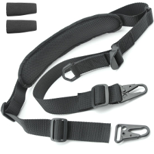

This is a must have product in my book. Every single gun I hunt with has a sling on it. These slings help with transport, and can even help with accuracy if used correctly. This one right here is extremely comfortable, durable (I've had mine for years), and it's cheap! Pick one up by following the link below.